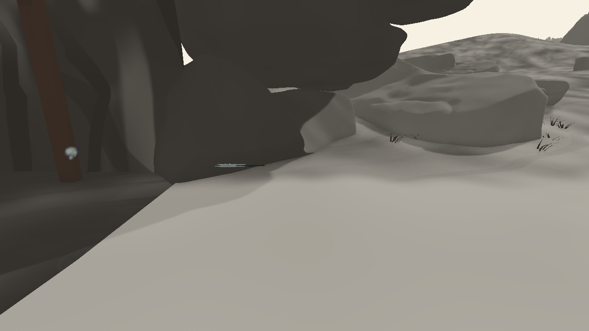

081 선 · 사용자 비주얼 검토 대기앞을 여는 은깃
두꺼운 판을 좁은 은깃 두 장으로 바꿨습니다. 짧게 접혔다가 평행하게 정렬되어 투사체 뒤를 따라갑니다.
이 영상의 투사체는 부착 동작을 보여주는 시연용 대역입니다. 실제 투사체 위치를 전달받는 연결점은 추가했지만, 게임의 속도 증가 버프에는 아직 연결하지 않았습니다.
짧은 재생
C2 기본 카메라 · 시작부터 소멸까지측면 카메라 · 투사체 뒤의 은깃
수정 전후
측면 이미지

기술 기록과 한계
한 장의 크기는 약3.5×0.6×23cm, 32정점·60tris입니다. 두 장이 하나의 메시를 공유합니다. KTP 금 속성 발동 문양과 기존2.8초 수명을 유지했습니다.
SetProjectileVisualAnchor로 제공된 위치와 방향만 읽으며 투사체의 위치·속도를 변경하지 않습니다. 위치가 제공되지 않은 동안에는 발사부에 작은 대기 형태를 표시합니다. 시연 경로는0.4초에 출발해2.8m를 이동하도록 별도로 설정했습니다.
1280×720·24fps의 진단용 카탈로그 영상입니다. 수정 전21은D3D12, 수정 후26은 Editor 복구용D3D11이며, 현재 영상에만 이동하는 투사체 대역이 있습니다. 실제 전투·버프 검증이나 비주얼 통과 판정이 아닙니다.
작업 보고서 · 단독 재생·소멸 기록 · 메시·부착 검사 · 변경 범위
앞선 시안: 상 · 섬 · 석 · 손 · 기존 전체 목록